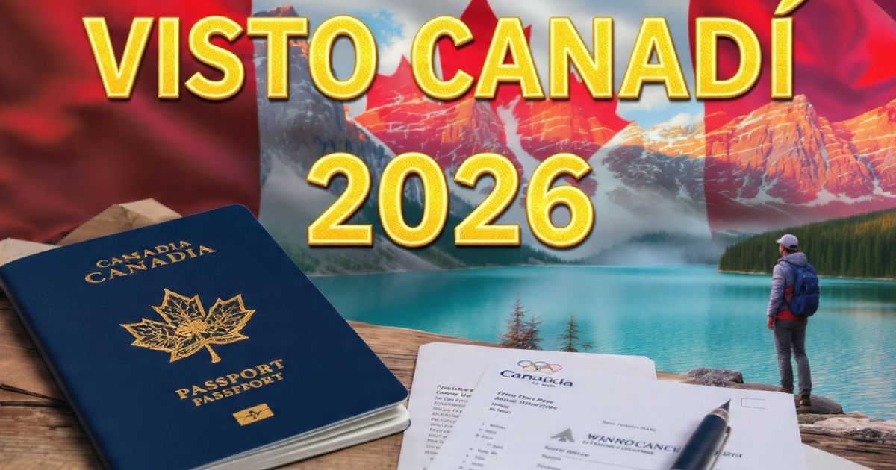

Visto de Turista para o Canadá 2026: guia completo para viajar para o país da folha de bordo
Introdução: o país das belezas naturais e da hospitalidade
O Canadá é um dos destinos mais procurados por viajantes brasileiros. Com suas paisagens de tirar o fôlego, suas cidades cosmopolitas, sua natureza exuberante e sua famosa hospitalidade, o país da folha de bordo atrai milhões de turistas todos os anos. Seja para explorar as Montanhas Rochosas, conhecer as Cataratas do Niágara, visitar Toronto, Vancouver ou Montreal, ou simplesmente apreciar a aurora boreal, o Canadá oferece experiências inesquecíveis para todos os perfis de viajantes.
Em 2026, o Canadá continua sendo um dos destinos preferidos dos viajantes brasileiros. No entanto, para a maioria dos brasileiros, é necessário obter o visto de turista (Visitor Visa) para entrar no país. O processo é detalhado e exige atenção, mas com as informações corretas e uma preparação adequada, é perfeitamente possível obter a aprovação.
Neste guia completo sobre o visto de turista para o Canadá, você vai encontrar tudo o que precisa saber para solicitar o visto com sucesso: o que é o visto canadense, quem precisa, os tipos de visto disponíveis, a documentação necessária, o passo a passo da solicitação, dicas para a entrevista, os valores atualizados e respostas para as principais dúvidas dos viajantes brasileiros.
Nosso objetivo é desmistificar o processo e mostrar que, com organização e as informações corretas, obter o visto canadense é perfeitamente possível. Afinal, o Canadá espera por você — e o primeiro passo é ter o visto em mãos.

O visto de turista para o Canadá é o documento essencial para visitar o país
O que é o visto de turista para o Canadá
O visto de turista para o Canadá, também conhecido como Visitor Visa ou Temporary Resident Visa (TRV), é um documento que permite que cidadãos estrangeiros entrem no Canadá para fins de turismo, visitas a familiares ou atividades de curta duração.
Características principais do visto canadense:
- Estadia temporária: Permite estadia de até 6 meses no Canadá.
- Múltiplas entradas: A maioria dos vistos é emitida com múltiplas entradas, válida por até 10 anos ou até a data de vencimento do passaporte.
- Não permite trabalho: O visto de turista não autoriza o trabalho remunerado no Canadá.
- Não permite estudo: Para cursos com duração superior a 6 meses, é necessário o visto de estudante.
Visto canadense vs. eTA (Electronic Travel Authorization): É importante não confundir o visto com o eTA. O eTA é uma autorização eletrônica para cidadãos de países isentos de visto (como os europeus). Brasileiros não são isentos e precisam solicitar o visto de turista.
Quem precisa do visto de turista para o Canadá
A maioria dos cidadãos brasileiros precisa de visto para entrar no Canadá. Entenda quem precisa e quem está isento:
Quem precisa do visto:
- Cidadãos brasileiros: Todos os cidadãos brasileiros que desejam entrar no Canadá para turismo, visitas a familiares ou atividades de curta duração.
- Residentes permanentes do Brasil: Cidadãos de outros países que residem no Brasil também precisam de visto, a menos que sejam de países isentos.
Quem NÃO precisa do visto:
- Cidadãos de países isentos: Cidadãos de países como Estados Unidos, Reino Unido, França, Alemanha, etc. (a maioria dos países europeus).
- Portadores de passaporte diplomático ou oficial: Em missões oficiais.
- Pessoas com residência permanente no Canadá: Green Card canadense.
Importante: Mesmo que você não precise de visto para entrar no Canadá, você pode precisar de um eTA (Electronic Travel Authorization) se for de um país isento. Brasileiros não são isentos e precisam do visto.
Tipos de visto de turista para o Canadá
Existem diferentes tipos de visto de turista para o Canadá, dependendo do propósito da viagem. Conheça os principais:
Visto de Turista (Visitor Visa) — O mais solicitado por brasileiros. Permite estadia de até 6 meses no Canadá para turismo, visitas a familiares, participação em eventos culturais, etc. É o visto mais comum para viajantes.
Visto de Visitante para Negócios — Para atividades profissionais, como reuniões, feiras, congressos e negociações. A documentação deve incluir carta da empresa convidante e comprovantes de atividade profissional.
Super Visa — Um visto especial para pais e avós de cidadãos ou residentes permanentes canadenses. Permite estadia de até 2 anos consecutivos, em vez dos 6 meses do visto de turista comum. Exige seguro médico e comprovação de recursos financeiros.
Visto de Trânsito — Para viajantes que precisam fazer conexão em aeroportos canadenses sem entrar no país. Nem todos os viajantes precisam desse visto.
Para a maioria dos viajantes brasileiros, o visto de turista (Visitor Visa) é o mais adequado. Neste guia, vamos focar principalmente nessa categoria.
Documentos necessários para o visto canadense
A documentação para o visto canadense é detalhada e exige atenção. Confira a lista completa:
Documentos obrigatórios:
- Passaporte válido — com validade mínima de 6 meses após a data de retorno ao Brasil.
- Formulário IMM 5257 — Formulário de solicitação de visto de visitante, preenchido online.
- Formulário IMM 5645 — Declaração de informações familiares.
- Formulário IMM 5257B — Autorização para coleta de dados biométricos.
- Foto digital 5x7 — recente, com fundo branco, seguindo as especificações do governo canadense.
- Comprovante de pagamento da taxa de solicitação — valor atualizado anualmente.
Documentos complementares:
- Comprovantes de vínculo com o Brasil — carteira de trabalho, contracheques, declaração de imposto de renda, escritura de imóvel, comprovante de matrícula em curso ou faculdade.
- Comprovantes financeiros — extratos bancários dos últimos 3 a 6 meses, investimentos, cartões de crédito com limite compatível com a viagem.
- Roteiro de viagem — com datas de entrada e saída, cidades que serão visitadas, reservas de hotéis e passagens aéreas.
- Comprovante de hospedagem — reserva de hotel, carta de convite de residente canadense ou comprovante de aluguel de temporada.
- Carta de apresentação — explicando o propósito da viagem e os planos para o retorno ao Brasil.
- Documentos profissionais — carta da empresa autorizando a viagem e informando o cargo, tempo de serviço e data prevista de retorno ao trabalho.
Passo a passo da solicitação do visto canadense
O processo de solicitação do visto canadense é feito online e dividido em etapas bem definidas. Siga este passo a passo com cuidado:
- Acesse o site do IRCC — O site oficial do governo canadense para imigração e vistos (www.canada.ca/ircc). Crie uma conta no sistema online (GCKey) ou use o parceiro de login (Interac, etc.).
- Preencha os formulários — Preencha o formulário IMM 5257 e os formulários complementares (IMM 5645, IMM 5257B). Responda todas as perguntas com precisão e honestidade.
- Pague a taxa de solicitação — Efetue o pagamento da taxa de solicitação do visto (aproximadamente CAD $100). O pagamento pode ser feito com cartão de crédito ou débito.
- Envie a documentação — Faça o upload dos documentos exigidos (passaporte, fotos, comprovantes financeiros, roteiro de viagem, etc.). Certifique-se de que todos os documentos estejam em formato PDF ou JPG e dentro dos limites de tamanho.
- Agende a coleta de dados biométricos — Após o envio da solicitação, você precisará agendar a coleta de dados biométricos (impressões digitais e foto) em um centro de coleta autorizado (VAC - Visa Application Centre). Os centros estão localizados em São Paulo, Rio de Janeiro, Brasília, Recife e Belo Horizonte.
- Compareça ao VAC — No dia agendado, compareça ao centro de coleta para a coleta de dados biométricos. Leve o comprovante de agendamento e o passaporte.
- Acompanhe o processo — Acompanhe o status da sua solicitação pelo sistema online do IRCC. O prazo para análise varia conforme a demanda.
- Retire o visto — Se aprovado, o visto será carimbado no passaporte. A retirada pode ser feita pessoalmente no VAC ou pelos Correios, mediante pagamento de taxa de entrega.
Entrevista no consulado: como se preparar
Diferentemente do visto americano, o visto canadense nem sempre exige uma entrevista presencial. No entanto, em alguns casos, o oficial consular pode solicitar uma entrevista. A preparação adequada é fundamental.
Perguntas típicas da entrevista (se solicitada):
- "Qual é o propósito da sua viagem?" — Seja claro: turismo, visita a familiares, negócios, etc.
- "Por que você escolheu o Canadá?" — Mencione atrações, paisagens, cultura, etc.
- "Quanto tempo você pretende ficar?" — Informe as datas exatas e a duração da estadia.
- "O que você faz profissionalmente?" — Explique sua profissão, empresa e cargo.
- "Quem vai custear a viagem?" — Informe se é você ou um familiar.
Dicas para a entrevista:
- Seja honesto — Mentir no processo é motivo para negativa e pode impedir futuras solicitações.
- Seja objetivo — Responda de forma clara e direta. Evite informações desnecessárias.
- Mantenha a calma — A ansiedade é normal, mas a confiança é importante.
- Vista-se adequadamente — Use roupas sociais ou casuais-elegantes.
- Chegue com antecedência — Recomenda-se chegar 30 minutos antes do horário agendado.
Valores e taxas do visto canadense em 2026
Os valores para solicitação do visto canadense são atualizados anualmente pelo governo canadense. Confira os valores para 2026:
| Serviço | Valor (CAD$) | Valor aproximado (R$)* |
|---|---|---|
| Taxa de solicitação de visto (por pessoa) | CAD$ 100,00 | ~ R$ 400,00 |
| Taxa de coleta de dados biométricos | CAD$ 85,00 | ~ R$ 340,00 |
| Taxa de solicitação (família - 2 a 5 pessoas) | CAD$ 500,00 | ~ R$ 2.000,00 |
| Taxa de entrega do visto pelos Correios | ~ CAD$ 25,00 | ~ R$ 100,00 |
*Valores aproximados com base no câmbio de agosto de 2026 (CAD$ 1,00 ≈ R$ 4,00).
Total estimado por pessoa: Aproximadamente R$ 740 a R$ 840 (incluindo taxa de solicitação, biometria e entrega).
Prazos e validade do visto canadense
Os prazos para obtenção do visto canadense variam conforme a época do ano e a demanda nos centros de processamento.
Prazos médios em 2026:
- Processamento online: de 15 a 45 dias úteis (em média, 30 dias).
- Coleta de dados biométricos: agendamento em 1 a 2 semanas.
- Análise da solicitação: de 15 a 45 dias úteis.
- Emissão do visto: de 3 a 10 dias úteis após a aprovação.
Validade do visto canadense:
- O visto de turista geralmente é válido por até 10 anos ou até a data de vencimento do passaporte.
- Cada entrada permite uma estadia de até 6 meses (a critério do oficial de imigração na fronteira).
Atenção: A validade do visto é diferente do tempo de estadia permitido. Mesmo que seu visto tenha validade de 10 anos, o tempo que você pode ficar no Canadá é definido pelo oficial de imigração na chegada.
Dicas para aumentar suas chances de aprovação
- Comprove vínculos fortes com o Brasil — Emprego estável, família, imóveis, negócios ou estudos no Brasil são os principais argumentos para demonstrar que você pretende retornar.
- Não minta em nenhuma informação — Inconsistências são facilmente detectadas e levam à negativa.
- Tenha um roteiro de viagem planejado — Mostre que você tem um planejamento claro e realista.
- Não compre passagens aéreas antes do visto — Espere a aprovação para evitar prejuízos financeiros.
- Organize sua documentação — Leve uma pasta com todos os documentos em ordem.
- Aplique com antecedência — Inicie o processo com pelo menos 3 meses de antecedência da viagem.
O visto canadense é um dos processos mais detalhados para viajantes brasileiros, mas com organização e as informações corretas, é perfeitamente possível obter a aprovação. Lembre-se: a honestidade e a clareza na apresentação dos documentos são os fatores mais importantes. Aplique com antecedência e prepare-se para uma experiência incrível no Canadá!
❓ Perguntas Frequentes sobre o visto canadense
Não. O visto canadense não é um direito automático. Cada solicitação é analisada individualmente, e a aprovação depende da capacidade do solicitante em comprovar vínculos com o Brasil, situação financeira e propósito da viagem.
Em média, o processo completo pode levar de 30 a 60 dias úteis. Recomenda-se iniciar o processo com pelo menos 3 meses de antecedência da viagem.
Nem sempre. A maioria dos solicitantes não precisa de entrevista presencial. No entanto, em alguns casos, o oficial consular pode solicitar uma entrevista. A coleta de dados biométricos é obrigatória para todos.
Se seu visto for negado, você pode tentar novamente a qualquer momento. Identifique o motivo da negativa e corrija as questões apontadas. Em alguns casos, é possível recorrer da decisão.
Não é recomendado comprar passagens aéreas antes da aprovação do visto. O ideal é ter uma reserva (que pode ser cancelada) e comprar apenas após a aprovação.
Não. O visto de turista não permite trabalho remunerado no Canadá. Para trabalhar, é necessário um visto específico, como o visto de trabalho (Work Permit).
Sim. Todos os viajantes, independentemente da idade, precisam de visto para entrar no Canadá. Crianças e bebês devem ter seus próprios passaportes e vistos.
O custo total para o visto canadense em 2026 é de aproximadamente R$ 740 a R$ 840 por pessoa, incluindo a taxa de solicitação (CAD$ 100), biometria (CAD$ 85) e entrega.